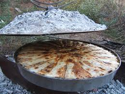

The best traditional food evar made
It's delicious thin layers of crust gives your tastebuds happiness.
The bad thing is that it takes alotttt of time to be made.
Ingredients
- 2 kg of flour
- 400 grams of dough
- 3 dcl cream or thick yogurt
- Salt
- Water
Return to top
Return to main page